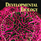

News Archives: Nov 1, 2003 - Jan 6, 2017
78 stories listed.
|
MCO Student Carolina Salguero Appointed 2016 Horizon Scholar
- Dec. 14, 2015
Carolina Salguero, a fifth-year graduate student in Victoria D'Souza ... Tags: 2015, graduate student award, graduate student education, mco |
|
|
MCB Student Wins 2016 Marshall Scholarship
- Dec. 11, 2015
Bianca Mulaney, who is earning her secondary major in MCB ... Tags: 2015, Marshall Scholarship, undergraduate, undergraduate scholarship |
|
|
Shree Bose (MCB, '16) among Harvard's 15 Most Interesting Seniors
- Dec. 11, 2015
This week, the Harvard Crimson profiled undergraduate superstar and MCB ... Tags: 2015, Harvard Crimson , undergraduate |
|
 |
MCB Students Earn Prestigious Rhodes Scholarships
- Dec. 8, 2015
Five Harvard undergraduates will begin courses at the University of ... Tags: 2015, Rhodes Scholar, Undergraduate Prizes, undergraduate education |
|
Five MCB Postdocs Receive Fellowships
- Dec. 2, 2015
We are pleased to announce the following MCB postdocs have ... Tags: 2015, Postdoctoral Fellowships, postdoctoral award |
|
|
Catherine Dulac to Deliver the 2015 MBB Distinguished Harvard Lecture on Wednesday, TODAY
- Dec. 1, 2015
Catherine Dulac to Deliver the 2015 MBB Distinguished Harvard Lecture ... Tags: 2015, 2015 MBB Distinguished Harvard Lecture, Catherine Dulac |
|
|
SciNote: Undergraduate Entrepreneur in Science Education
- Dec. 1, 2015
Student by day, Executive Director by night, neuroscience concentrator Yi ... Tags: 2015, undergraduate education, undergraduate initiative |
|
 |
How do Zebrafish Perceive Heat? [Engert and Schier Labs]
- Nov. 25, 2015
In a recent paper in Cell Systems Martin Haesemeyer, Alexander ... Tags: 2015, Alexander Schier, Cell Systems, Florian Engert, publication |
|
Finding Cortical Progenitors in Higher Vertebrates [Ramanathan Lab]
- Nov. 17, 2015
The surface of the human brain has many folds (is ... Tags: 2015, Nature Methods, Sharad Ramanathan, publication |
|
|
Two MCB Graduate Students Receive HHMI and NIH Fellowships
- Nov. 17, 2015
Congratulations are in order for MCB graduate students Mariela Petkova ... Tags: 2015, Andrew Murray, Florian Engert, Graduate Student Fellowships |
|
|
William M. Gelbart September 11, 1945 - August 11, 2015
- Oct. 20, 2015
Professor William Gelbart (September 11, 1945 – August 11, 2015) Tags: 2015, William Gelbart, obituary |
|
 |
Establishing Cell Fate with a Pole-Vaulting Phosphatase [Losick Lab]
- Oct. 19, 2015
An important question in biology is how genetically identical cells ... Tags: 2015, Richard Losick, eLife, publication |
|
A Neuronal Bar Code in 3D [Gaudet Lab]
- Oct. 16, 2015
In a paper just published in Structure in collaboration with ... Tags: 2015, Rachelle Gaudet, Structure, publication |
|
 |
Summer School Program: Research in Paris [Lue and Viel]
- Sept. 30, 2015
This summer, Professors Rob Lue and Alain Viel took biology ... Tags: 2015, Undergraduate Summer Internship, summer program in Paris, France, undergraduate education |
|
Back from Bangalore: Summer Research in India Leaves Undergrads Hungry for More
- Sept. 29, 2015
Unforgettable international escapades ranked second to hands-on lab experience for ... Tags: 2015, summer program in India, undergraduate education |
|
|
Think Globally, Research Internationally: Undergraduate Scientists Study Abroad in Japan
- Sept. 29, 2015
"It all started from my own experience," says MCB professor ... Tags: 2015, Takao Hensch, summer program in Japan, undergraduate education |
|
|
MCB Members Honored at Department Retreat
- Sept. 28, 2015
The annual MCB awards were presented on September 11 and ... Tags: 2015, MCB Research Retreat, MCB award |
|
|
Professor Lucy Shapiro will deliver the 2016 Paul Doty Lecture on Oct 1st, 2015
- Sept. 27, 2015
he Doty Lecture is presented annually to celebrate the scientific ... Tags: 2015, Paul Doty Lecture |
|
|
Mapping Activity and Anatomy in the Zebrafish Brain [Engert and Schier Labs]
- Sept. 14, 2015
The holy grail for neuroscientists is to understand how the ... Tags: 2015, Alexander Schier, Florian Engert, Nature Methods, publication |
|
|
Pathway for Disappointment [Uchida Lab]
- Sept. 10, 2015
Dopamine neurons signal reward prediction errors (RPEs), but how RPEs ... Tags: 2015, Naoshige Uchida, Neuron, publication |
|
|
"Sharing is Caring": Summer Internship Thrives on Mentorship Exchange
- Sept. 9, 2015
Each June, MCO welcomes a cohort of six to nine ... Tags: 2015, SROH, Summer Research Opportunities at Harvard, mco, undergraduate education |
|
 |
"Personalized Lesson" May Not be Dopamine's Way [Uchida Lab]
- Sept. 1, 2015
Dopamine, originally referred to as a pleasure molecule, is now ... Tags: 2015, Naoshige Uchida, eLife, publication |
|
Predictions and the Brain [Uchida Lab]
- Aug. 31, 2015
Say you're at a supermarket, staring at two cartons ... Tags: 2015, Naoshige Uchida, Nature, publication |
|
|
Hooking Up to Detect Local Motion [Sanes Lab]
- Aug. 24, 2015
The retina is not only a light sensor but also ... Tags: 2015, Joshua Sanes, Nature, publication |
|
|
MCB Welcomes Sean Eddy and Elena Rivas
- Aug. 24, 2015
Sean Eddy and Elena Rivas are computational biologists at the ... Tags: 2015, Elena Rivas, Sean Eddy, faculty profile |
|
 |
Josh Sanes Featured in Science Magazine
- Aug. 18, 2015
Joshua Sanes contributes optimism (and a great deal of research ... Tags: 2015, In the News, Joshua Sanes, science feature |
|
Venki Murthy Organizes Olfactory Summit in Santa Barbara
- Aug. 14, 2015
Venki Murthy returned this week from his summer "vacation" in ... Tags: 2015, In the News, Venkatesh Murthy |
|
|
Vlad Denic Receives Early Career Life Scientist Award
- Aug. 10, 2015
The American Society for Cell Biology (ASCB) recently selected Vlad ... Tags: 2015, Early Career Life Scientist Award, The American Society for Cell Biology, Vlad Denic, award |
|
|
Beste Mutlu Wins AAUW's International Fellowship
- Aug. 7, 2015
Beste Mutlu, a third year graduate student in Susan Mango ... Tags: 2015, Graduate Student Fellowships, Susan Mango, graduate student award, mco |
|
 |
The Elegance of Dendrites and Why it Matters [Sanes Lab]
- Aug. 6, 2015
The dendritic processes of neurons form elaborate branched arbors that ... Tags: 2015, Joshua Sanes, eLife, publication |
|
Diego Baptista Awarded Prestigious HHMI Gilliam Fellowship
- July 31, 2015
Diego Baptista, a doctoral candidate in Harvard University's Molecules ... Tags: 2015, Graduate Student Fellowships, HHMI Gilliam Fellowship, graduate student award, graduate student education, mco |
|
|
Reconstructing the Brains Wiring Diagram [Lichtman Lab]
- July 30, 2015
This paper describes a suite of automated technologies designed to ... Tags: 2015, Cell, Jeff Lichtman, publication |
|
|
HarvardX Learning Labs for Kids with David Cox
- July 22, 2015
As an extension of his HarvardX for Allston program, Fundamentals ... Tags: 2015, David Cox, Harvard EdPortal, HarvardX, community outreach, education |
|
|
Poised for Action [Mango Lab]
- July 20, 2015
Talk to any teenager and they will tell you the ... Tags: 2015, Science, Susan Mango, publication |
|
 |
Whose Genes Control the Brain? Mom's or Dad's [Dulac Lab]
- July 17, 2015
Most cells in the mammalian body contain two copies of ... |
|
Cleared Tissue Imaging at the Harvard Center for Biological Imaging
- July 16, 2015
The Harvard Center for Biological Imaging (HCBI) recently celebrated its ... Tags: 2015, Cell, HCBI, Harvard Center for Biological Imaging, Jeff Lichtman, publication |
|
|
Destruction on Demand [Denic Lab]
- July 9, 2015
Selective autophagy, a specialized transport process that captures unwanted intracellular ... Tags: Molecular Cell, Vlad Denic, publication |
|
|
THURJ (The Harvard Undergraduate Research Journal)
- July 9, 2015
Guy Jean-Louis and Velina Kozareva, Class of 2016, joined the ... Tags: 2015, THURJ, The Harvard Undergraduate Research Journal, undergraduate, undergraduate education |
|
|
Florian Engert Featured in Smithsonian Magazine
- July 3, 2015
Florian Engert Featured in Smithsonian Magazine; https://goo.gl/GT6yjR Tags: 2015, Florian Engert, In the News, Smithsonian Magazine |
|
|
Catherine Dulac Appears on Charlie Rose Brain Series, with Eric Kandel
- June 23, 2015
Catherine Dulac Appears on Charlie Rose Brain Series, with Eric ... Tags: 2015, Catherine Dulac, Charlie Rose, In the News |
|
|  |
Two Negatives Make a Positive [Mango Lab]
- June 12, 2015
Polarity is all around us – in our batteries, in our ... Tags: 2015, Developmental Biology, Susan Mango, publication |
|
Postdoc Profile: Andi Pauli [Schier Lab]
- June 11, 2015
If you ask Andrea Pauli, she'll tell you she ... Tags: 2015, Alexander Schier, postdoc profile |
|
|
Radio Broadcasting in Cells [O'Shea Lab]
- June 10, 2015
To survive, cells must monitor their environments and elicit appropriate ... Tags: 2015, Erin O'Shea, eLife, publication |
|
|
Annual Boston Bacterial Meeting to be Held at Science Center June 18-19
- May 31, 2015
For the past 20 years, the annual Boston Bacterial Meeting ... Tags: 2015, BBM |
|
|
Catherine Dulac Appears on Charlie Rose Brain Series, with Eric Kandel
- May 28, 2015
Catherine Dulac Appears on Charlie Rose Brain Series, with Eric ... Tags: 2015, Catherine Dulac, Charlie Rose, In the News |
|
|
A Review of the 2015 EPB Symposium
- May 28, 2015
A Review of this year's EPB Symposium Tags: 2015, EPB Symposium Review, Engineering and Physical Biology (EPB), mco |
|
|
Eleven Undergraduates Receive Thirteen Prizes
- May 26, 2015
Eleven Undergraduates Receive Thirteen Prizes Tags: 2015, John E. Dowling Thesis Prize, Lawrence J. Henderson Prize, Thomas Temple Hoopes Prize, Undergraduate Prizes |
|
|
Finding of Sexual Reproduction in Bdelloid Rotifers Removes What Had Been a Problem for Evolutionary Theory [Meselson Lab]
- May 21, 2015
Nearly all species of animals and plants reproduce sexually, either ... Tags: 2015, Genetics, Matthew Meselson, publication |
|
|
Chromosomes as Mechanical Objects [Kleckner Lab]
- May 21, 2015
We have suggested that chromosomes should be viewed as macroscopic ... Tags: 2015, Cell, Nancy Kleckner, publication |
|
|
Four MCB Postdocs Receive Fellowships
- May 19, 2015
Congratulation to Johannes Kohl and Jeffrey Moore from the Catherine ... Tags: 2015, Postdoctoral Fellowships, Postdoctoral Research Fellow |
|
 |
Neurobiology Concentrator, Saheela Ibraheem, is Featured in the Harvard Gazette
- May 18, 2015
Saheela Ibraheem, a neurobiology concentrator, is featured in the Harvard ... Tags: 2015, neuroscience contentration, undergraduate education |
 |
Harnessing the Power of Amazon's Cloud in a New Era for Structural Biology [Leschziner Lab]
- May 8, 2015
Structural biology is currently undergoing a revolution: single-particle cryo-electron microscopy ... Tags: 2015, Andres Leschziner, eLife, publication |
|
Wired to Escape [Schier and Engert Labs]
- May 7, 2015
Knock on a tank of fish and you may observe ... Tags: 2015, Alexander Schier, Current Biology, publication |
|
|
The Mr. Mom Switch [Dulac Lab]
- April 28, 2015
The Dulac Lab's Research featured in Harvard Magazine, May ... Tags: 2015, Catherine Dulac, Harvard Magazine |
|
|
Four MCO Graduate Students Earn NSF Fellowships
- April 28, 2015
First year MCO graduate students Georgia Squyres and Nico Wagner ... Tags: 2015, Graduate Student Fellowships, NSF Graduate Research Fellowship, mco |
|
|
The Where and Why of Gene Expression [Schier Lab]
- April 20, 2015
While most cells in the body have the same DNA ... Tags: 2015, Alexander Schier, Nature Biotechnology, eLife, publication |
|
|
MCB Concentrator Named a Top Ten College Woman
- April 20, 2015
Shree Bose, an MCB concentrator from Raul Mostoslavsky's Lab ... Tags: 2015, MCB concentration, awards, glamour magazine, undergraduate |
|
 |
EPB to Hold Annual Symposium, Saturday, April 25
- April 16, 2015
On Saturday, April 25, the annual Engineering and Physical Biology ... Tags: 2015, Engineering and Physical Biology (EPB) Symposium, epb |
|
Sharad Ramanathan Receives Award for Excellence in Mentoring
- April 15, 2015
The Graduate Student Council has honored Sharad Ramanathan with its ... Tags: 2015, Everett Mendelsohn Excellence in Mentoring Award, Sharad Ramanathan |
|
|
MCB Graduate Student Wins Bok Award for Teaching [O'Shea Lab]
- April 15, 2015
Alicia Darnell, a graduate student from the Department of Molecular ... Tags: 2015, Derek C. Bok Award, award, graduate student award, teaching |
|
|
12th Annual Microbial Sciences Initiative (MSI) Symposium Explores the Richest Biological Reservoir on Earth
- April 13, 2015
On Saturday, April 18th, eight prominent microbial scientists hailing from ... Tags: 2015, MSI, Microbial Sciences Symposium |
|
|
Middle School Students Become Scientists for a Day in MCB
- April 9, 2015
During the first week of April, middle school students from ... Tags: MCB Outreach Program, 2015, Alexander Schier, MHBA, Mott Hall Bridges Academy, community outreach |
|
|
Music Honoring Renowned Meselson-Stahl Experiment Premieres April 10, 2015 SOLD OUT
- April 6, 2015
The world premiere of "Helix Spirals," a composition for string ... Tags: 2015, Matthew Meselson |
|
|
Postdoc Profile: Ye-Jin Jenna Eun [Garner Lab]
- April 3, 2015
"Hey wake up, we're going somewhere," Ye-Jin Eun's ... Tags: 2015, Ethan Garner, postdoc profile |
|
|
David Julius Will Deliver the 2015 Paul Doty Lecture
- April 2, 2015
David Julius, Professor and Chair of Physiology at the University ... Tags: 2015, Paul Doty Lecture |
|
|
Why Some Axons Regenerate Better than Others [Sanes Lab]
- March 20, 2015
Recovery from injury to the mammalian brain or spinal cord ... Tags: 2015, Joshua Sanes, Neuron, publication |
|
 |
Clock Genes Time Brain Development [Hensch Lab]
- March 19, 2015
New research from investigators at Harvard University reveals that circadian ... Tags: 2015, Neuron, Takao Hensch, publication |
 |
On April 2, Michael Rosbash Presents 2015 Bloch Lecture
- March 17, 2015
This year's Bloch Lecture will be given by Michael ... Tags: 2015, Bloch Lecture |
|
Jane Lubchenco to Give 2015 Prather Lectures CANCELED
- March 12, 2015
The annual John M. Prather Lectures in Biology will be ... Tags: 2015, Prather Lectures |
|
|
Feeling Good or Bad Lately? Listen to Serotonin [Uchida Lab]
- March 10, 2015
Serotonin is one of the most widespread and mysterious neurotransmitters ... Tags: 2015, Naoshige Uchida, eLife, publication |
|
 |
Celebrating the New Harvard Ed Portal
- Feb. 23, 2015
Celebrating the New Harvard Ed Portal Tags: 2015, Harvard EdPortal, HarvardX, Robert Lue, community outreach, education |
|
A Rotary Motor for Bacterial Gliding [Berg Lab]
- Feb. 2, 2015
Bacterial gliding is defined as steady movement over a surface ... Tags: 2015, Current Biology, Howard Berg, publication |
|
|
Postdoc Profile: Christina Zimanyi [Gaudet Lab]
- Jan. 29, 2015
Christina Zimanyi hails from Big Bear Lake, a resort town ... Tags: 2015, Rachelle Gaudet, education, postdoc profile |
|
|
MCB Professor Wins International Award [Hopi Hoekstra]
- Jan. 28, 2015
The Department of Molecular and Cellular Biology is pleased to ... Tags: 2015, Hopi Hoekstra, National Academy of Sciences, Richard Lounsbery Award, award |
|
 |
Big Data Processing in MCB
- Jan. 28, 2015
Big data processing in MCB. Tags: 2015, Jeff Lichtman, Technology |
|
Catherine Dulac Receives National Academy of Sciences Pradel Research Award
- Jan. 23, 2015
The National Academy of Sciences has awarded Catherine Dulac, the ... Tags: 2015, Catherine Dulac, National Academy of Sciences, Pradel Research Award, award |
|
|
Six MCB Postdocs Receive Fellowships
- Jan. 12, 2015
It is our pleasure to announce that six postdoctoral fellows ... Tags: 2015, Postdoctoral Fellowships, Postdoctoral Research Fellow |
|
|
Patrick Hsu Named One of Forbes 30 Scientists Under 30
- Jan. 12, 2015
At 22, Patrick Hsu has accomplished more than most people ... Tags: 2015, MCB Graduate Student, graduate student award, graduate student education, mco |